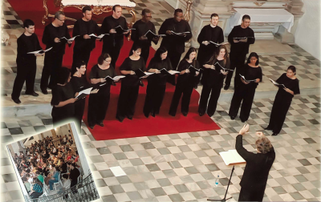

O CONTRACANTOS
Um dos grupos vocais de destaque do Nordeste brasileiro, o CONTRACANTOS foi criado em 2002 pelo maestro e professor da Universidade Federal de Pernambuco, Flávio Medeiros. Já se apresentou em diversas cidades de Pernambuco, em outros estados do Nordeste e no exterior, na França, Suíça e Estados Unidos. Seu repertório é centrado em peças de compositores brasileiros, valorizando a cultura nordestina, mas também se estende pelos diversos estilos e períodos da história da música universal. Do maracatu, da ciranda e do côco à ópera e ao oratório, da música popular à erudita, do sacro ao profano, o CONTRACANTOS transita entre diversos universos realizando pesquisa musical na elaboração dos seus espetáculos e concertos.
Atualmente é composto por 17 cantores: Fábia Sobral, Maria Aida Barroso, Mariane Mariz, Sue, Tarcyla Perboire, Vanessa de Melo Lacerda (sopranos), Adriana Carla, Lucia Helena Cysneiros, Surama Ramos, Virgínia Cavalcanti (contraltos), Eudes Naziazeno, Isaac Pedro, Mário Monteiro, Matheus Soares (Tenores), Douglas Araújo, Luiz Kleber Queiroz, Guilherme Jacobsen e Osvaldo Pacheco (baixos).
O CONTRACANTOS tem se apresentado em concertos, à cappella ou acompanhado por conjuntos de câmara ou orquestras, sob regência de Flávio Medeiros ou de maestros brasileiros como Osman Gioia, Sílvio Barbato, José Renato Accioly, Dierson Torres e Maria Aida Barroso, e estrangeiros como o sueco Erick Westberg, o americano Frank Abrahams, a francesa Christèle Rifaux e a argentina Monica Alfaya.
 Em 2016 o CONTRACANTOS realizou, com o patrocínio do Governo do Estado de Pernambuco (FUNDARPE/FUNCULTURA), a turnê POVO BRASILEIRO: CANTOS DO NORDESTE pelas cidades de Grenoble, Lyon e Paris, na França e em Recife, e a turnê RÉQUIEM PARA ARIANO SUASSUNA por seis cidades de Pernambuco.
Realiza regularmente recitais e participa de concertos com orquestras, de Festivais de Música e de programações significativas da nossa cidade, tais como a reabertura do Teatro de Santa Isabel (2002) e do Salão Nobre desse teatro (2006). Participou ainda de projetos de grande repercussão como: Mostra Internacional de Música de Olinda (MIMO), Virtuosi Internacional, Virtuosi Nacional e Virtuosi na Serra. Fez parte da ópera Carmen, de G. Bizet e da ópera O Cientista, de Sílvio Barbato, ambas representadas em Recife. Realizou importantes peças como o Requiem de G. Fauré, o Requiem de W. A. Mozart, o Messias de G. F. Haendel, a Missa Nordestina de Clóvis Pereira, a Missa de Gloria de G. Puccini, a Cantata profana Carmina Burana de C. Orff e o Oratorio de Noël de C. Saint-Saëns, entre outras obras.
 O Contracantos tem contribuído na formação de plateia, divulgando a música brasileira para crianças, jovens e adultos, promovendo ainda oficinas de percussão, canto coral e concertos-aula no Recife e em algumas cidades da Europa e dos Estados Unidos. Em sua primeira turnê ao exterior, em maio de 2003, realizou diversos recitais em cidades francesas como Grenoble, Ancy, Lyon, Paris, entre outras, divulgando especialmente a música pernambucana. Em 2005 representou o país no projeto: 2005 – Ano do Brasil na França. No ano de 2006, realizou uma turnê pelos Estados Unidos visitando diversas cidades e universidades americanas – Westminister Choir College, West Virginia University, Notre Dame University, Indiana University , finalizando a turnê no Festival Internacional de Música do Mundo – Lotus Festival.
Participou ainda dos CD’s : “A Música Erudita dos Compositores Populares Pernambucanos” , com produção da Virtuosi Sociedade Artística e no CD Tenha Modos do grupo SaGrama.
Em 2014, iniciou junto ao grupo instrumental CONTRAVENTOS, um trabalho sobre peças nordestinas, originais e arranjadas, para instrumentos de sopro e percussão.
O Contracantos tem contribuído na formação de plateia, divulgando a música brasileira para crianças, jovens e adultos, promovendo ainda oficinas de percussão, canto coral e concertos-aula no Recife e em algumas cidades da Europa e dos Estados Unidos. Em sua primeira turnê ao exterior, em maio de 2003, realizou diversos recitais em cidades francesas como Grenoble, Ancy, Lyon, Paris, entre outras, divulgando especialmente a música pernambucana. Em 2005 representou o país no projeto: 2005 – Ano do Brasil na França. No ano de 2006, realizou uma turnê pelos Estados Unidos visitando diversas cidades e universidades americanas – Westminister Choir College, West Virginia University, Notre Dame University, Indiana University , finalizando a turnê no Festival Internacional de Música do Mundo – Lotus Festival.
Participou ainda dos CD’s : “A Música Erudita dos Compositores Populares Pernambucanos” , com produção da Virtuosi Sociedade Artística e no CD Tenha Modos do grupo SaGrama.
Em 2014, iniciou junto ao grupo instrumental CONTRAVENTOS, um trabalho sobre peças nordestinas, originais e arranjadas, para instrumentos de sopro e percussão.